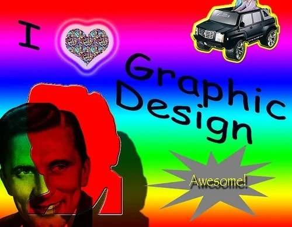
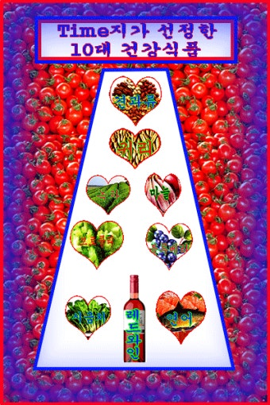

이상하게 끌리는 디자인

완벽하지 않은 여백, 의도치 않게 삐뚤어진 정렬, 그리고 촌스러운 색감. 이런 요소들은 기존의 '좋은 디자인' 기준에서 벗어나 있지만, 최근에는 이러한 못생긴 디자인을 일부러 찾는 움직임이 커지고 있다. 이는 디자인이 단순히 미적으로 완성되어야 한다는 고정관념을 허물고, 인간적인 결함을 포용하려는 문화적 흐름과 연결된다.
미국 매체 Vox는 "추한 디자인이 오히려 진정성을 느끼게 한다"고 분석하며, 복고풍과 의도된 어설픔이 소비자에게 친근감을 주는 역할을 한다고 보도했다. 오히려 이와 같은 투박한 시각 언어가, 디지털 환경 속에서 피로감을 느낀 사용자들에게 심리적 안정감을 제공할 수 있다는 분석도 존재한다.
못생긴 디자인이 뜬다
'Ugly Design' 인스타그램 계정은 디자인 실수 또는 의도된 추한 감성을 소개하며 인기를 끌고 있다. 이와 같은 시도는 기존 미학에 대한 반발이자 실험으로, 독창성과 솔직함을 추구하는 Z세대의 소비 취향과 맞물려 더욱 주목받고 있다.
심리학적으로도 이는 ‘불완전성의 미학’과 관련이 있다. 디자이너 Craig Mod는 "잠깐 멈춰서 생각하게 만드는 이상한 디자인이 더 오래 기억된다"고 말하며, 정돈되지 않은 디자인이 감정적 기억을 자극한다고 분석했다.
정제되지 않은 감성의 매력

위 이미지는 색상 과다, 정렬 혼란, 비일관된 타이포그래피 등의 요소가 뒤섞인 전형적인 디자인 실패 사례처럼 보인다. 일반적인 시각에서는 산만하고 비효율적으로 느껴질 수 있으나, 아이러니하게도 이러한 조잡함이 오히려 사용자에게 친근감과 솔직함을 전달한다는 평가도 많다. 이는 디지털 시대의 지나치게 정제된 디자인 환경 속에서 사람들이 느끼는 피로감과도 연결된다.
반면, 어딘가 어설프고 부조화적인 요소들이 모인 디자인은 우리가 현실에서 마주하는 불완전한 삶의 모습과 닮아 있어 더욱 감정적으로 와닿는다. 예를 들어 살짝 어긋난 정렬이나 과장된 컬러 대비는 실수처럼 보일 수도 있지만, 오히려 그런 요소들이 사용자의 감각을 자극하며 기억에 오래 남는 ‘결점의 미학’을 만들어낸다.
정제된 미감보다 감정적 공감을 불러일으키는 디자인은 사람들에게 심리적인 위안을 주는 역할도 한다. 지나치게 이상적인 시각 체계보다, 감성적이고 서툴며 때로는 기괴하게 느껴지는 디자인이 오히려 더 깊은 인상을 남긴다. 특히 요즘처럼 모든 것이 알고리즘과 최적화로 구성된 시대에는, 그런 비정형적이고 예측 불가능한 형태가 역설적으로 더 인간적으로 느껴진다.
결국, 레트로한 감성이나 의도적인 촌스러움은 단순한 유행을 넘어서, 익숙함과 불완전함 속에서 심리적 안정감을 찾는 시대의 욕망을 반영한다. 이러한 경향은 디자인이 단순히 보기 좋은 결과물에서 끝나는 것이 아니라, 사용자와의 정서적 연결을 만들어내는 일종의 대화라는 점을 다시금 상기시켜 준다.